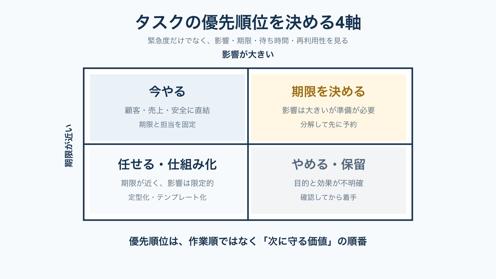

OPERATIONS / TASK PRIORITY
タスクの優先順位の付け方｜緊急度だけで決めない4つの判断軸
タスクが増えると、期限が近いものから着手しがちです。しかし、緊急度だけでは重要な仕事や、他の業務を止める仕事が埋もれます。影響、期限、待ち時間、再利用性で順番を決め直します。

- 緊急度だけでなく、顧客・売上・安全への影響を見る。
- 他者の待ち時間を減らすタスクは、早めに処理する。
- 優先順位は固定せず、期限と情報が変わったら更新する。
優先順位は、期限だけで決めると崩れる
中小企業大学校の「自動化×生成AI超入門講座」は、少人数の事務部門でも業務効率化が重要であり、生成AIやRPAを使って事務の自動処理に取り組む内容を示しています。自動化の前に、何を先に処理すべきかを決める必要があります。
期限だけで並べると、すぐ返せる依頼が常に上位になります。その結果、重要な提案準備、障害の予防、手順の整備が後回しになり、後から大きな手戻りになります。優先順位は作業者の忙しさではなく、業務への影響で説明できる状態にします。
独自の見方：タスクの「重さ」より、止めたときに誰が待つかを見ると順番が変わります。自分の作業時間が短くても、後工程を5人が待っているなら、先に処理する価値があります。
4つの判断軸で、タスクを同じ表に置く
すべてのタスクを細かく採点する必要はありません。まずは4軸を低・中・高の3段階で置き、判断理由を一言で残します。点数が目的ではなく、担当者によって順番が変わる理由を共有することが目的です。
| 判断軸 | 高い状態 | 確認する質問 |
|---|---|---|
| 影響 | 顧客、売上、安全、法令に直結 | 止めると何が困るか？ |
| 期限 | 今日・明日が締切、遅延が連鎖 | 本当の締切はいつか？ |
| 待ち時間 | 他者や後工程が止まっている | 誰が何を待っているか？ |
| 再利用性 | テンプレートや仕組みとして何度も使う | 一度直すと何回減るか？ |
「重要だが期限が遠い」仕事には、着手日を先に予約します。「急ぎだが影響が小さい」仕事には、テンプレート化や担当変更を検討します。判断軸を分けると、すべてを自分で抱える状態から抜けやすくなります。
4象限に分けて、次の行動を固定する
影響の大きさと期限の近さを縦横に置くと、タスクの扱いを4つに分けられます。IPAが紹介するAI活用でも、文書作成・確認など業務を分解して使う考え方が示されています。優先順位表も、作業名だけでなく次の行動まで書きます。
影響大・期限近
担当と期限を固定し、他の仕事を止める。
影響大・期限遠
分解して、先に時間を予約する。
影響小・期限近
任せる、テンプレート化する。
影響小・期限遠
目的を確認し、やらない選択も残す。
「保留」は放置ではありません。確認日、必要な情報、再判断の条件を残します。条件が決まっていないタスクを一覧の上位に置き続けると、見るたびに迷う時間が発生するからです。
AIには分類と下書きを任せ、優先決定は人が行う
AIは、メールや会議メモからタスク候補を抜き出し、期限・担当・依存関係を表にする補助に向いています。一方で、顧客への影響、社内政治、契約上の責任、事故の重大さは、文面だけでは判断できません。優先順位の決定は責任者が行います。
指示するときは「タスク名」「期限」「依存する人」「影響」「不明点」を分けて渡し、推測した項目には印を付けさせます。個人情報や未公開の案件情報をAIへ入力する場合は、生成AIの社内利用ルールとサービス条件を確認します。
実務での観察：AIに「優先順位を決めて」とだけ指示すると、期限の近さを過大評価しがちです。「影響」「待ち時間」「判断できない情報」を別列で出させ、最後に人が並べ替える方が確認しやすくなります。
毎日と毎週で、見直す対象を分ける
毎日の確認では、期限、待ち時間、突発的な障害だけを見ます。毎週の確認では、繰り返し発生するタスク、差し戻し、手作業の多い工程を見て、テンプレート化や自動化の候補を探します。短期の並べ替えと、仕組みの改善を同じ会議に詰め込みません。
- 新しい依頼を一覧へ集める。
- 4軸を低・中・高で仮置きする。
- 今やるタスクを3件程度に絞る。
- 保留・任せるタスクへ再判断日を付ける。
- 週末に繰り返し作業を仕組み化候補へ移す。
業務効率化のアイデアを探すときは、定型業務10選を入口にし、実際の作業時間や差し戻しを測ります。AI導入を検討する場合も、30日ロードマップのように小さく試し、続ける条件と停止条件を決めてください。
よくある質問
タスクの優先順位は何点で採点すればよいですか？
最初から精密な点数を作る必要はありません。影響、期限、待ち時間、再利用性を低・中・高で置き、順番の理由を一言で残します。運用してから項目を調整します。
緊急の依頼はすべて最優先ですか？
緊急でも影響が小さければ、任せる、テンプレート化する、期限を確認する選択があります。顧客・売上・安全・契約に影響するかを確認し、期限だけで順番を固定しません。
AIにタスクの順番を決めさせてもよいですか？
候補の分類や抜け漏れ確認には使えますが、最終決定は人が行います。顧客への影響、契約、機密情報、例外対応は、AIが判断した順番をそのまま採用しません。
次に読む・使う
- 中小企業大学校「自動化×生成AI超入門講座」、2026年7月26日確認。
- IPA「AIの利活用、AIによるDXの推進」、2026年7月26日確認。
- 経済産業省「AI事業者ガイドライン（第1.2版）」、2026年7月26日確認。